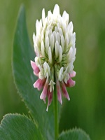
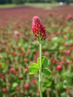
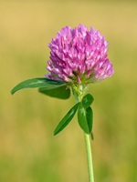

What Are Clovers?

A clover is a small green broadleaf herbaceous plant belonging to the legume family. Technically, they are apart of the bean and pea family.
Gardeners and farmers alike typically use it as a cover crop, or neutriant rich food for foraging animals.
Beliefs About Clovers
Clovers carry a multitude of significance throughout different cultures and superstitions, typically having something to do with luck, and good fortune.
A day people typically associate with clovers is St. Patricks Day, which has people looking for four-leaf clovers in search of luck.
Other Uses For Clovers
As mentioned, farmers and gardeners use clovers as a source of neutriants for their plants and animals, but people use them for much more. Many beekeepers keep clover in their yards because of the copious amounts of pollen they create, while other people turn them into teas.
Flowering Clovers


